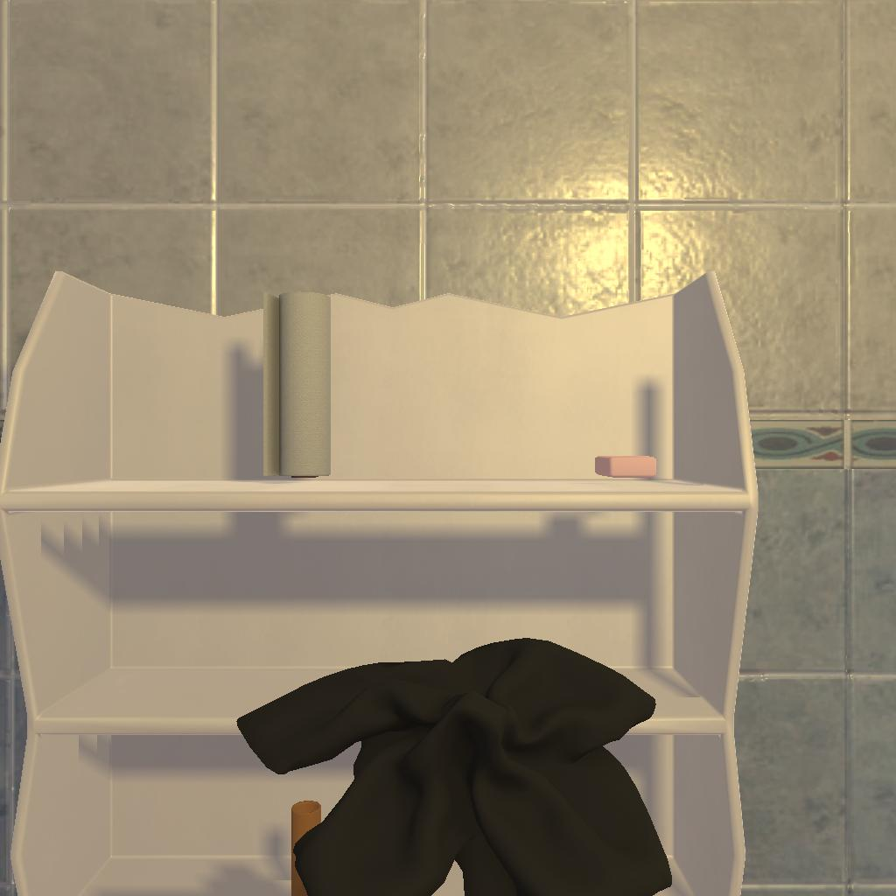

---------------------------------------------------------task: 25---------------------------------------------------------
--------------------------------------------------------------------------------------------------------------------------------------------------------------------
--------------------------------------------------------------------------------------------------------------------------------------------------------------------
Step:--------------------------------------------------------------------------19-------------------------------------------------------------------------------
----------------------------------------
VLM Prompt:
**Task**
Please perform as an embodied AI agent. Our final objective is to find two dishsponge and put them in cart. Below is the plan for completing the task, the current observation, alongside historical data and admissible actions for the next step. Please determine the best action for the next step!
**Plan**
Below is a detailed step-by-step plan to complete the task.
1. Find a dish sponge.
2. Pick up the dish sponge.
3. Find a cart.
4. Place the picked-up dish sponge in the cart.
5. Find another dish sponge.
6. Pick up the dish sponge.
7. Return to the previously located cart.
8. Place the second picked-up dish sponge in the cart with the first one.
**Current Observation**
Displayed is an image capturing the current position of the agent.
Objects in The Image: ['tiled wall', 'towel rack', 'two rolled towels', 'soap', 'towel']
**History Information**
Displayed are the previous observations with their corresponding actions.
State 0:
No history.
State 1:
1. Step Index in the Plan: 1
2. Objects: Towel Ring, Mirror, Bathroom Tiles, Sink, Faucet, Soap Dispenser, Bathtub, Shower Head, Toilet, Towel Rack, Bathroom Floor
3. Action: go to shelf 3
State 2:
1. Step Index in the Plan: Unknown
2. Objects: Toilet Paper Roll, Bar of Soap, Shelf 3
3. Action: go to shelf 2
State 3:
1. Step Index in the Plan: 1
2. Objects: Shower Shelf, Soap, Bottles
3. Action: go to cart 1
State 4:
2. Step Index in the Plan: Next step after placing the first dish sponge in the cart
3. Objects: Towel Rack, Towel, Tiled Wall
4. Action: go to shelf 1
State 5:
1. Step Index in the Plan: 1
2. Objects: Shelf, Toilet Paper Roll, Soap
3. Action: go to shelf 4
State 6:
1. Step Index in the Plan: 1
2. Objects: Bathroom Tiles, Shower Shelf, Toilet Paper Roll, Bar of Soap
3. Action: go to bathtub 1
State 7:
1. Step Index in the Plan: 2
2. Objects: Bathtub, Black Cloth Object, (not explicitly mentioned Dish Sponge)
3. Action: take dishsponge 1 from bathtub 1
State 8:
1. Step Index in the Plan: 3
2. Objects: Bathtub, Green Sponge (dish sponge), Cart
3. Action: go to cart 1
State 9:
1. Step Index in the Plan: Uncertain, but likely a step involving placing an item in a cart
2. Objects: Green Soap, Black Sponge (dish sponge), Toilet Paper Roll, Cart
3. Action: put dishsponge 1 in/on cart 1
State 10:
1. Step Index in the Plan: 5
2. Objects: Metal Rack (Cart), Yellow Sponge, Toilet Paper Roll, Black Piece of Clothing
3. Action: go to shelf 4
State 11:
1. Step Index in the Plan: 5
2. Objects: Cart, Black Piece of Clothing, Yellow Sponge (dish sponge)
3. Action: take cloth 1 from cart 1
State 12:
1. Step Index in the Plan: 5
2. Objects: Towel Rack, Towel, Tiled Wall
3. Action: go to shelf 3
State 13:
1. Step Index in the Plan: 5
2. Objects: Bathroom Shelf, Toilet Paper Roll, Soap, Towel
3. Action: go to bathtub 1
State 14:
1. Step Index in the Plan: 5
2. Objects: Bathtub, Towel, Bottle
3. Action: go to shelf 4
State 15:
1. Step Index in the Plan: 5
2. Objects: Towel Rack, Rolled Towels, Bar of Soap, Towel
3. Action: go to shelf 1
State 16:
1. Step Index in the Plan: 5
2. Objects: Empty Toilet Paper Roll, Shelf, Soap, Towel, Tile Floor, Tile Wall
3. Action: go to bathtubbasin 1
State 17:
1. Step Index in the Plan: 5
2. Objects: Bathtub, Cloth
3. Action: go to shelf 3
State 18:
1. Step Index in the Plan: 5
2. Objects: White Shelving Unit, Pink Soap, Empty Toilet Paper Roll, Brown Object, Black Crumpled Towel
3. Action: go to shelf 4
State 19:
1. Step Index in the Plan: 5
2. Objects: Shelf, Rolled Towels, Bar of Soap
3. Action: go to shelf 2
**Admissible Actions**
(1): go to bathtub 1
(2): go to bathtubbasin 1
(3): go to cart 1
(4): go to toilet 1
(5): go to garbagecan 1
(6): go to toiletpaperhanger 1
(7): go to shelf 1
(8): go to sink 1
(9): go to sinkbasin 1
(10): go to handtowelholder 1
(11): put cloth 1 in/on shelf 2
(12): examine cloth 1
**Analysis Guideline**
1. Analyze the history and current observation, and then determine our current step in the plan and our current place.
2. List all visible objects related to the task in the current observation, without summarizing any as "various items."
3. Analyze the objects in the current observation based on the history and the requirements for the current step, and then determine if we can complete the step with the current observation.
4. Analyze and decide on the most appropriate action to take.
5. Summarize the analysis using the following format: "Analysis: [The summarization of the analysis], The Most Appropriate Action: (i which is the integer.): [Selected action]"
**Notes**
1. We must complete each step of the plan in order and cannot skip steps when the previous ones are not finished.
2. For "Go to" actions listed as "go to xxx [n]", interpret this as there are n distinct actions available: "go to xxx 1", "go to xxx 2", ..., "go to xxx n". Select one specific action from these options instead of using "go to xxx [n]".
3. If receptacles such as drawers, cabinets, and so forth are closed in the current observation, we may try to open them.
4. Pay attention to synonyms and ensure clarity in the terms used.
5. We must determine and provide the single action which must be in the **Admissible Actions**.
6. If there is no history available, we are at the first step and the current place is "Unknown".
**Answer**
Please select the most suitable action by following the **Analysis Guideline**, keeping the above **Notes** in mind.
----------------------------------------
----------------------------------------
VLM Response:
Analysis: The current step in the plan is to find another dish sponge, which is step 5. Based on the current observation, we are looking at a shelving unit with various items. The visible objects are a towel rack, two rolled towels, a bar of soap, and a towel. None of these objects are a dish sponge, which is the item we are currently tasked with finding. Therefore, we cannot complete the current step with the items visible in this observation. We need to continue searching for a dish sponge. Looking at the admissible actions, we should move to a different location to find the second dish sponge. Since we have already visited various shelves and the bathtub without success, and "go to shelf 4" is not an option here, our best action is to go to a location not yet checked after picking up the first sponge. "Go to cart 1" is the action related to a previous step, and "go to bathtub 1" and "go to bathtubbasin 1" are locations that were already checked in previous states without finding a sponge. The most appropriate action would be to go to a new location such as "go to sink 1," which has not been checked since the first sponge was picked up.
The Most Appropriate Action: (8): go to sink 1
----------------------------------------
----------------------------------------
>>> Refine VLM Response and Get Pure Action: go to sink 1
----------------------------------------
-----------------------------------------------------------------
Running time: 16.996036052703857 seconds
Total Money: 0
-----------------------------------------------------------------
-----------------------------------------------------------------
Summarization Prompt:
**Context**
Analysis: Since there is no history information, we are at the first step in the plan, which is to find a statue. The current place is unknown. In the current observation, we see a floorlamp next to an armchair with a small table that has a small object on it, which could potentially be the statue we are looking for. Since the plan requires us to find a statue first and it appears there might be one on the table next to the armchair, we should investigate this object to determine if it is the statue we need.
The Most Appropriate Action: (1): go to armchair 1
**Summary**
1. Step Index in the Plan: 1
2. Objects: Floorlamp, Armchair, Small Table, Small Object (potential statue)
3. Action: go to armchair 1
**Context**
Analysis: The current step in the plan is to find another dish sponge, which is step 5. Based on the current observation, we are looking at a shelving unit with various items. The visible objects are a towel rack, two rolled towels, a bar of soap, and a towel. None of these objects are a dish sponge, which is the item we are currently tasked with finding. Therefore, we cannot complete the current step with the items visible in this observation. We need to continue searching for a dish sponge. Looking at the admissible actions, we should move to a different location to find the second dish sponge. Since we have already visited various shelves and the bathtub without success, and "go to shelf 4" is not an option here, our best action is to go to a location not yet checked after picking up the first sponge. "Go to cart 1" is the action related to a previous step, and "go to bathtub 1" and "go to bathtubbasin 1" are locations that were already checked in previous states without finding a sponge. The most appropriate action would be to go to a new location such as "go to sink 1," which has not been checked since the first sponge was picked up.
The Most Appropriate Action: (8): go to sink 1
Please summarize the context by following above examples when providing the summary, and ensure that only the summary is included, without any extra explanation.
**Summary**
-----------------------------------------------------------------
-----------------------------------------------------------------
Summarization Response:
1. Step Index in the Plan: 5
2. Objects: Towel Rack, Rolled Towels, Bar of Soap, Towel
3. Action: go to sink 1
-----------------------------------------------------------------
-----------------------------------------------------------------
Text Observation:You arrive at loc 10. On the sink 1, you see a faucet 1, a toiletpaper 2, and a soapbar 2.
-----------------------------------------------------------------
UNSUCCEED